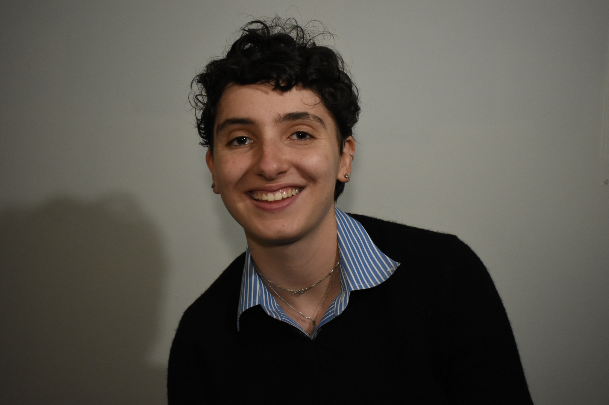

Recent CS and Statistics grad from UVM. Statistical thinker and problem solver.
background

I'm a recent CS graduate from the University of Vermont, where
I worked on various collaborative projects and built
solutions as part of a team. My coursework and projects have centered
around the intersection of data science, machine learning, and software engineering.
I'm drawn to roles where I can apply my skills to real engineering problems.
selected works
Languages
Frameworks & libraries
Tools & infrastructure
I'm actively looking for full-time roles in AI engineering, Data science, Software engineering - full-stack.
alexakaplan9@gmail.com